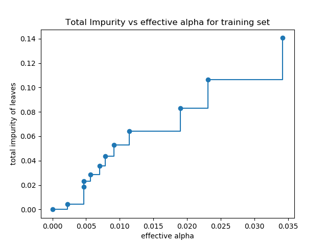
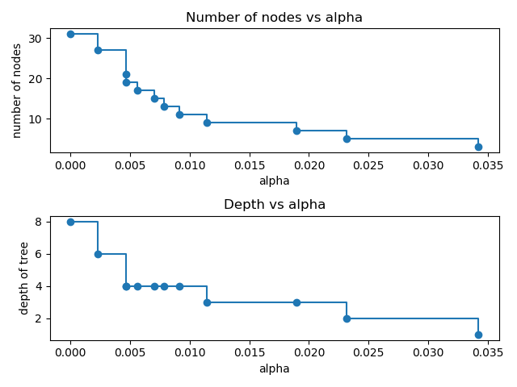
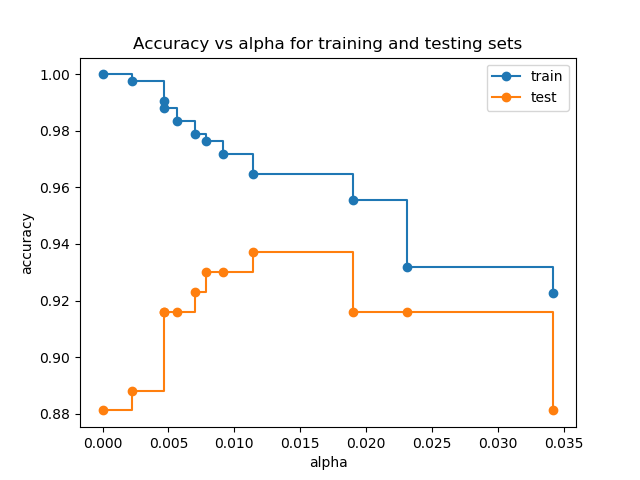

Note
Click here to download the full example code or run this example in your browser via Binder
Post pruning decision trees with cost complexity pruning¶
The DecisionTreeClassifier provides parameters such as
min_samples_leaf and max_depth to prevent a tree from overfiting. Cost
complexity pruning provides another option to control the size of a tree. In
DecisionTreeClassifier, this pruning technique is parameterized by the
cost complexity parameter, ccp_alpha. Greater values of ccp_alpha
increase the number of nodes pruned. Here we only show the effect of
ccp_alpha on regularizing the trees and how to choose a ccp_alpha
based on validation scores.
See also ref:_minimal_cost_complexity_pruning` for details on pruning.
print(__doc__)
import matplotlib.pyplot as plt
from sklearn.model_selection import train_test_split
from sklearn.datasets import load_breast_cancer
from sklearn.tree import DecisionTreeClassifier
Total impurity of leaves vs effective alphas of pruned tree¶
Minimal cost complexity pruning recursively finds the node with the “weakest
link”. The weakest link is characterized by an effective alpha, where the
nodes with the smallest effective alpha are pruned first. To get an idea of
what values of ccp_alpha could be appropriate, scikit-learn provides
DecisionTreeClassifier.cost_complexity_pruning_path that returns the
effective alphas and the corresponding total leaf impurities at each step of
the pruning process. As alpha increases, more of the tree is pruned, which
increases the total impurity of its leaves.
X, y = load_breast_cancer(return_X_y=True)
X_train, X_test, y_train, y_test = train_test_split(X, y, random_state=0)
clf = DecisionTreeClassifier(random_state=0)
path = clf.cost_complexity_pruning_path(X_train, y_train)
ccp_alphas, impurities = path.ccp_alphas, path.impurities
In the following plot, the maximum effective alpha value is removed, because it is the trivial tree with only one node.
fig, ax = plt.subplots()
ax.plot(ccp_alphas[:-1], impurities[:-1], marker='o', drawstyle="steps-post")
ax.set_xlabel("effective alpha")
ax.set_ylabel("total impurity of leaves")
ax.set_title("Total Impurity vs effective alpha for training set")

Next, we train a decision tree using the effective alphas. The last value
in ccp_alphas is the alpha value that prunes the whole tree,
leaving the tree, clfs[-1], with one node.
clfs = []
for ccp_alpha in ccp_alphas:
clf = DecisionTreeClassifier(random_state=0, ccp_alpha=ccp_alpha)
clf.fit(X_train, y_train)
clfs.append(clf)
print("Number of nodes in the last tree is: {} with ccp_alpha: {}".format(
clfs[-1].tree_.node_count, ccp_alphas[-1]))
Out:
Number of nodes in the last tree is: 1 with ccp_alpha: 0.3272984419327777
For the remainder of this example, we remove the last element in
clfs and ccp_alphas, because it is the trivial tree with only one
node. Here we show that the number of nodes and tree depth decreases as alpha
increases.
clfs = clfs[:-1]
ccp_alphas = ccp_alphas[:-1]
node_counts = [clf.tree_.node_count for clf in clfs]
depth = [clf.tree_.max_depth for clf in clfs]
fig, ax = plt.subplots(2, 1)
ax[0].plot(ccp_alphas, node_counts, marker='o', drawstyle="steps-post")
ax[0].set_xlabel("alpha")
ax[0].set_ylabel("number of nodes")
ax[0].set_title("Number of nodes vs alpha")
ax[1].plot(ccp_alphas, depth, marker='o', drawstyle="steps-post")
ax[1].set_xlabel("alpha")
ax[1].set_ylabel("depth of tree")
ax[1].set_title("Depth vs alpha")
fig.tight_layout()

Accuracy vs alpha for training and testing sets¶
When ccp_alpha is set to zero and keeping the other default parameters
of DecisionTreeClassifier, the tree overfits, leading to
a 100% training accuracy and 88% testing accuracy. As alpha increases, more
of the tree is pruned, thus creating a decision tree that generalizes better.
In this example, setting ccp_alpha=0.015 maximizes the testing accuracy.
train_scores = [clf.score(X_train, y_train) for clf in clfs]
test_scores = [clf.score(X_test, y_test) for clf in clfs]
fig, ax = plt.subplots()
ax.set_xlabel("alpha")
ax.set_ylabel("accuracy")
ax.set_title("Accuracy vs alpha for training and testing sets")
ax.plot(ccp_alphas, train_scores, marker='o', label="train",
drawstyle="steps-post")
ax.plot(ccp_alphas, test_scores, marker='o', label="test",
drawstyle="steps-post")
ax.legend()
plt.show()

Total running time of the script: ( 0 minutes 2.237 seconds)
Estimated memory usage: 8 MB